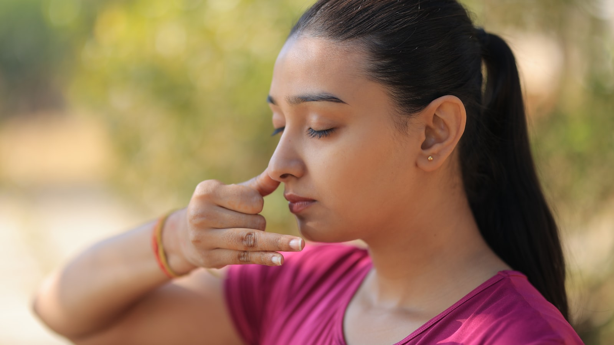
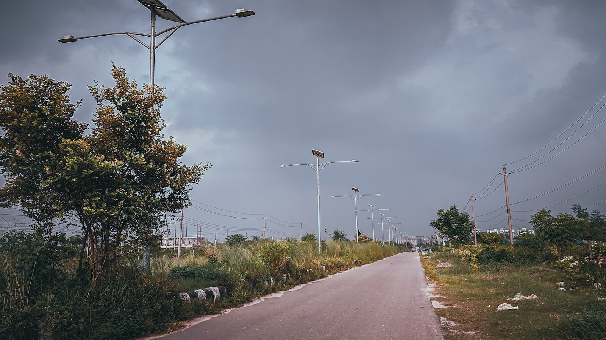
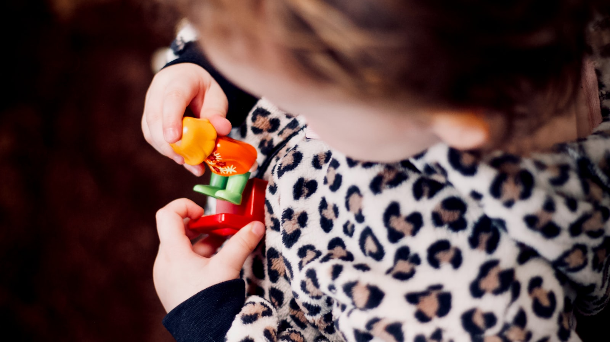
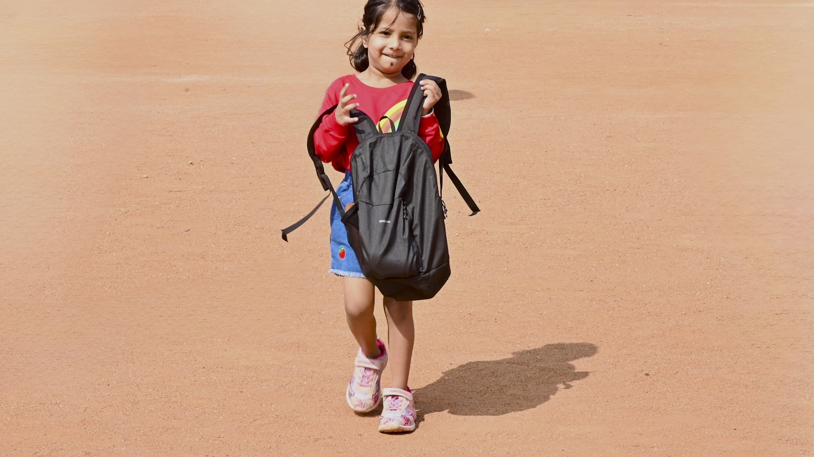
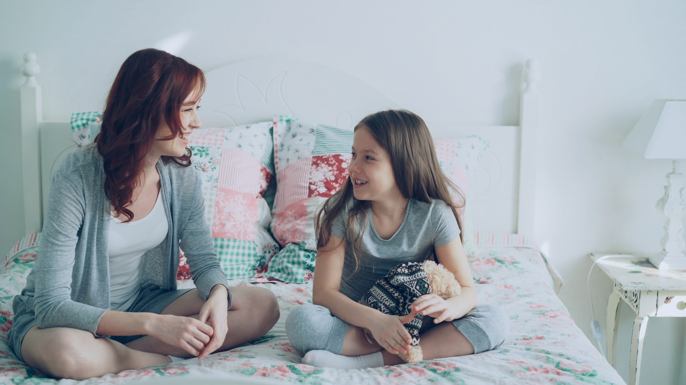
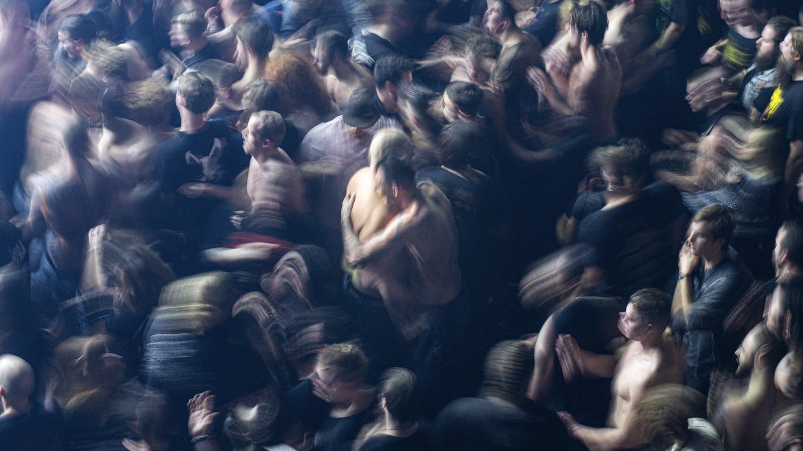

RAGIMOFF Bloq
Klinik məqalələr, elmi araşdırmalar, psixoloji
Psixogen Depressiyanın Müalicəsi — Klinik Protokol
Qısamüddətli kognitiv-restrukturlaşdırma və uzunmüddətli profilaktik strategiyanın inteqrasiyası. 17 illik klinik praktika əsasında — yüngül və orta ağırlıqlı psixogen depressiyada antidepressantsız tam remissiya.

Psixogen Depressiyanın Müalicəsi — Klinik Protokol
Qısamüddətli kognitiv-restrukturlaşdırma + uzunmüddətli profilaktik strategiya. 17 illik praktika, longituidnal nəticələr, antidepressantsız tam remissiya yolu.

Gecə Enurezi — Modifikasiya Edilmiş Alarm-Protokol
10 həftəlik strukturlaşdırılmış proqram. n=240 klinik praktika, 80% halda tam remissiya. Maye yükləməsi, aktiv valideyn iştirakı, Kegel məşqləri.

KDT Depressiyada Necə İşləyir?
Koqnitiv-Davranış Terapiyasının üçbucağı, avtomatik düşüncələr, davranış aktivləşməsi və effektivlik dəlilləri. Beck Institute, NICE və APA tövsiyələri əsasında.

Depressiya Kədərdən Necə Fərqlənir?
DSM-5 üzrə 7 klinik əlamət, kədərlə fərq, risk faktorları. Böyük depressiv pozğunluğun tanınması və müalicə yolları — APA və WHO əsaslı.

Antidepressantlar — Faktlar və Miflər
SSRI nədir, asılılıq yaradırmı, ömürlük olarmı — ən tez-tez verilən suallara dəlilə əsaslanan cavablar.

Postpartum Depressiya — Tanımaq və Müalicə
Doğuşdan sonra depressiya — anaların 15-20%-ində. «Baby blues»-dan fərq, risk amilləri və müalicə yolları.

Mövsümi Depressiya (SAD) və İşıq Terapiyası
Qışda başlayan, yazda keçən depressiya — sirkadian ritm, melatonin və 10,000 lux işıq terapiyası.

Panik Atak Anında Nə Etməli? — 3 Texnika
4-7-8 nəfəs, 5-4-3-2-1 topraqlanma və qəbul texnikası — hücum anında sübut edilmiş alətlər.
Panik Atak Anında Beyində Nə Baş Verir?
Amigdala, «yalan həyəcan», adrenalin axını — panik atakın neyrobioloji mexanizmi sadə dildə.

Agorafobiya — Panik Atakdan Sosial Təcridə
Niyə panik atakdan sonra insan evdən çıxa bilmir? Qaçınma davranışının necə dərinləşdiyi və müalicə yolları.

KDT Panik Pozğunluqda Necə İşləyir?
Koqnitiv-Davranış Terapiyasının panik üçün xüsusi protokolu: psikoeğitim, interocepetiv ekspozisiya, in vivo ekspozisiya.
Panik Ataklarla Bağlı 7 Mif və Elmi Cavablar
«Panik atakdan ölə bilərsən», «ağılını itirirsən», «xarakter zəifliyidir» — yayılmış miflər və dəlilə əsaslanan cavablar.

Uşağınız Gecələr Yatağı Isladırsa — 5 Yanlış İnanc
«Özü keçər», «su içməsin», «danlamaq lazımdır» — yayılmış inanclar və ICCS, NICE əsaslı elmi cavablar.

BMGE — Birincili Monosimptomatik Gecə Enurezi
4 növ enurez, diaqnostika kriteriyaları, beynəlxalq müalicə protokolu (ICCS 2020).

Alarm Cihazı Necə İşləyir? — Beynəlxalq Protokol
Enurez alarm cihazının işləmə prinsipi (Pavlov şərtlənməsi) və 12 həftəlik tətbiq protokolu.

Desmopressin və İmipramin — Dərmanlar
Desmopressin nə vaxt verilir, imipramin niyə tövsiyə edilmir — beynəlxalq protokollardan cavablar.

Valideynlər Üçün 7 Praktik Məsləhət
Müalicə zamanı uşağa necə kömək edəcəyi — maye rejimi, sıçrayışlar, səfər, motivasiya.

Ailə Münaqişəsini Həll Etmənin 5 Prinsipi
Gottman İnstitutunun 40 illik araşdırmaları əsasında 5 prinsip — boşanma riskini 90% dəqiqliklə müəyyənləşdirir.

Toksik Münasibətin 7 Əlaməti — Tanımaq və Çıxış
Tənqid, gaslighting, izolyasiya, maliyyə kontrolu — sağlam və toksik münasibəti ayıran 7 klinik əlamət.

Boşanma Astanasında Ailə — Müalicə vs Ayrılıq
Hansı ailələri qurtarmaq mümkündür, hansılar yox? Klinik kriteriyalar və discernment counseling protokolu.

Cütlüklər Necə Düzgün Mübahisə Etməlidir?
Gottman metodu — yumşaq başlanğıc, 4 atlı, fasilə qaydası, təmir cəhdləri. Konstruktiv mübahisənin 7 qaydası.

Etibar İtirildikdə Onu Necə Qaytarmaq Olar?
Xəyanət, yalan, etibar pozuntusu — 4 mərhələli klinik bərpa protokolu. 12-24 ay strukturlaşdırılmış proses.
Yeniyetməniz Sizinlə Danışmırsa — Səbəb Siz Deyilsiniz
13-17 yaş — beyin inkişafının ən intensiv dövrüdür. Niyə valideynlər «düşmən» görünür və nə etmək lazımdır.

Uşaq Davranış Problemləri — Əmr-Cəza vs Anlama
Aqressiya, itaətsizlik, məktəbdən imtina — anlaşılmamış emosional siqnaldır. 5 tipik davranış və əsl səbəbləri.
Boşanma Sonrası Uşaq — Necə Kömək Etmək Olar?
Boşanma uşağa zərər vermir — onun necə baş verməsidir. 5 praktik qayda və yaş üzrə reaksiyalar.

Məktəbdən İmtina — 5 Əsl Səbəb
Sosial anksiyete, akademik çətinliklər, ayrılıq narahatlığı, depressiya, travma. Tədricən geri qayıtma protokolu.

Uşağa «Yox» Demək — Sağlam Sərhəd Necə Qurulur?
Sevgi və qaydalar bir-birinə zidd deyil. Baumrind-in valideyn stilləri və 5 praktik vəziyyət.
Sosial Fobiya — Sadəcə Utancaqlıq Deyil
Utancaqlıq və klinik sosial anksiyete arasında fərq, DSM-5 kriteriyaları və müalicə yolları.
İctimai Çıxış Qorxusu — KDT və Ekspozisiya
Glossofobiya — yayılmış sosial fobiya. KDT, ekspozisiya hierarxiyası və Toastmasters strategiyası.
Qızarma və Tərləmə — Sosial Reaksiyalar
Eritrofobiya, hiperhidroz, titrəmə — sosial anksiyetenin fiziki simptomları və «spotlight effect» tədqiqatı.

Sosial Anksiyete vs İntrovertlik — Fərq Nədə?
İntrovertlik — sağlam şəxsiyyət. Sosial anksiyete — klinik vəziyyət. İki vəziyyəti necə ayırd etmək?
Sosial Mediada Anksiyete — Yeni Forma
FOMO, sonsuz müqayisə, beğeni axtarışı — sosial medianın psixoloji çətinlikləri və müdaxilə strategiyaları.

Yaxşı Psixoloq Heç Vaxt İşsiz Qalmır — Niyə?
Niyə peşəkar psixoloqlar daim tələbatdadır və yaxşı psixoloq olmaq üçün nə lazımdır. Karyera yolu və real maliyyə perspektivi.

Klinik vs Ümumi Psixologiya — Fərq və Seçim
İki psixologiya növünün fərqi, kim hansı yolu seçməlidir və hibrid yanaşma haqqında.

Yeni Psixoloq Üçün İlk Müştəri Necə Alınır?
Universitetdən sonra psixoloji praktika başlatmaq — networking, marketinq, korporativ və ilk 6 aylıq plan.

Süpervizyon — Psixoloqun Davamlı Müəllimi
Süpervizyon nədir, kim üçün vacibdir, individual vs qrup, necə düzgün süpervizor seçmək.

Psixoloqun Özünüqayğısı — Burnoutdan Qorunma
Psixoloji peşədə burnout 40-60%. Maslach modeli, vicarious trauma və 30 günlük özünüqayğı planı.